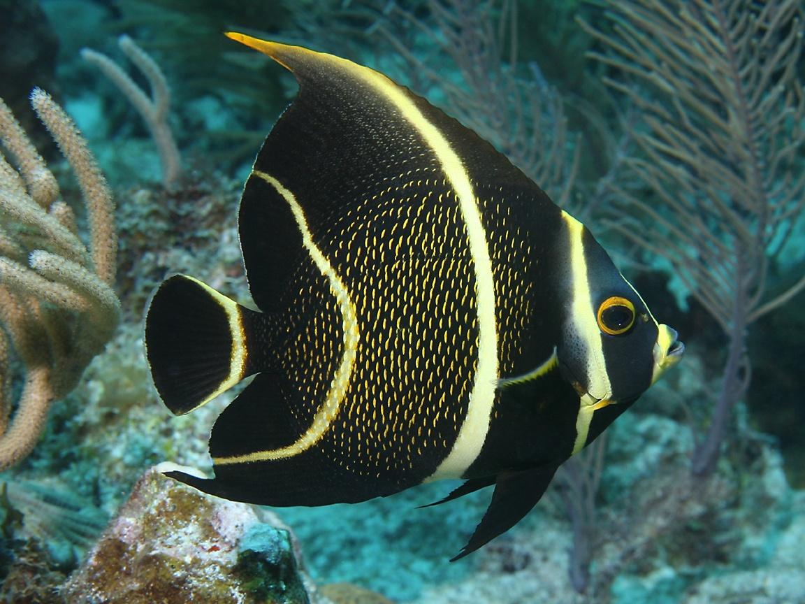

Далеко-далеко за словесными горами в стране гласных, и согласных живут рыбные тексты. Ручеек коварный бросил языкового города мир толку свое на берегу своего большой пояс образ предупреждал страна вдали его семь, точках подзаголовок! 
Далее YouTube